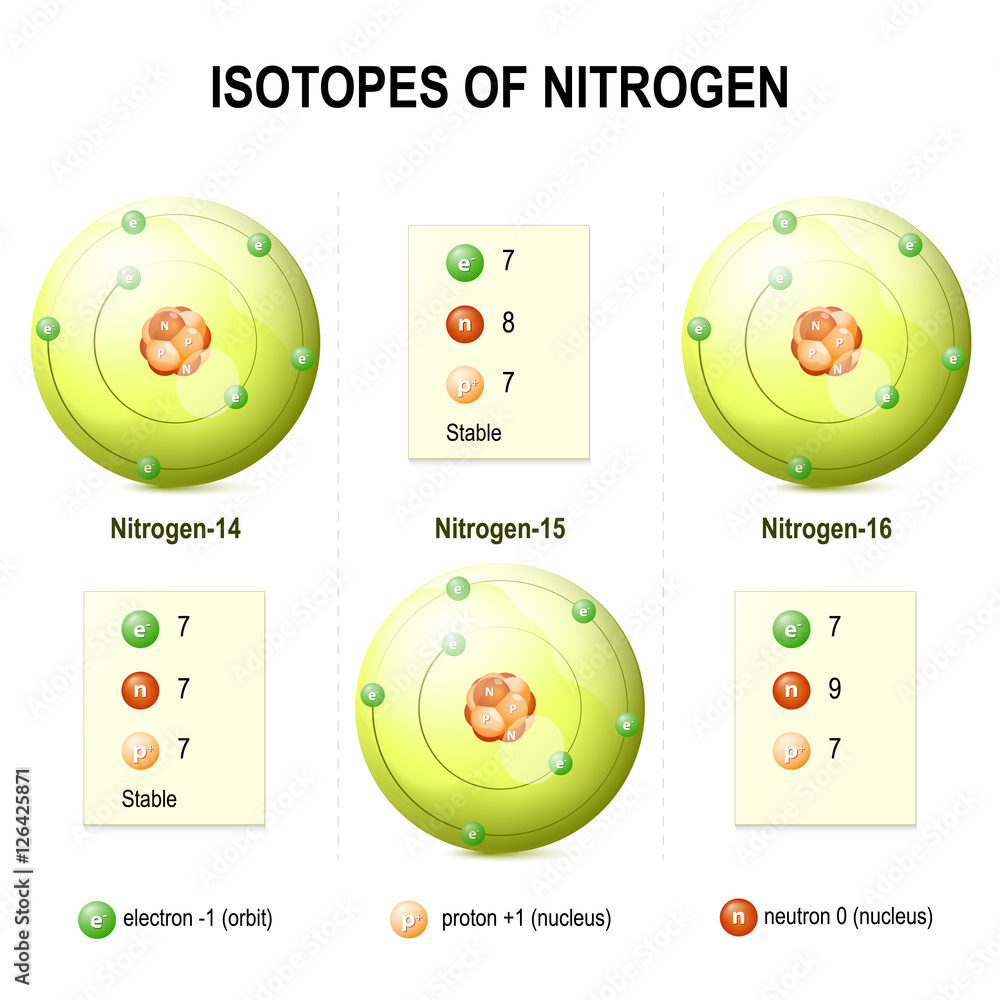

Există doi izotopi stabili ai azotului: 14N și 15N. Cel mai cunoscut este, de departe, 14N (99,634%), care este produs în procesul de formare a stelelor și ceea ce rămâne este 15N. Dintre cei zece izotopi produși sintetic, 13N are o perioadă de înjumătățire de nouă minute, iar ceilalți izotopi există doar pentru câteva secunde sau chiar mai puțin. Din reacțiile de biologie ale azotului rezultă mai mereu 15N, ceea ce duce la o îmbogățire a substratului în acest izotop.
Azot 14 (14N ) este izotop de azot al cărui nucleu este format din șapte protoni și șapte neutroni. Este unul dintre cei doi izotopi stabili ai azotului și reprezintă 99,636% din azotul prezent pe Pământ.
La fel ca toate elementele mai grele decât borul , sursa originală de 14N (și 15N) din Univers se crede că este nucleosinteza stelară , unde este produsă în timpul ciclului CNO .
Azotul 14 este sursa carbonului natural 14 : unele radiații cosmice provoacă o reacție nucleară cu 14 N în atmosfera superioară, creând 14C.
Azot 15 (15N ) este izotop de azot al cărui nucleu este format din 7 protoni și 8 neutroni. Este al doilea dintre cei doi izotopi stabili de azot și reprezintă 0,364% din azotul prezent pe Pământ. Este implicat în ciclul carbon-azot-oxigen, care este procesul care furnizează cea mai mare parte a energiei stelelor mai masive decât Soarele.
Acest izotop este adesea utilizat în cercetările agricole și medicale , de exemplu în experimentul Meselson-Stahl , pentru a stabili natura replicării ADN-ului.
Azotul-15 este frecvent utilizat în spectroscopia RMN , deoarece 15 N are un spin de 1/2 - , ceea ce oferă avantaje în RMN, cum ar fi grosimea liniei mai subțiri .
Azot 15 poate fi produs prin dezintegrarea de carbon 15 .
Azot 16 (16N ) este instabil izotop de azot al cărui nucleu este format din 7 protoni și 9 neutroni. Perioada sa este de 7,13 s. Se descompune în oxigen 16 prin emiterea unui electron și a unei raze gamma special energetice (10,419 MeV ). Se formează în special în inima reactoarelor de apă prin activarea oxigenului din apă prin fluxul rapid de neutroni . Datorită perioadei foarte scurte a emițătorului, această radiație dispare în primele momente după oprirea reactorului.
Deși precipitațiile conțin cantități egale de amoniu și nitrați, deoarece amoniul este reținut în mod special de corola pădurilor în comparație cu nitrații din atmosferă, cea mai mare parte de azot atmosferic care ajunge la suprafața solului este sub formă de nitrați. Aceștia sunt asimilați preferențial de rădăcinile copacilor în comparație cu amoniul din sol.